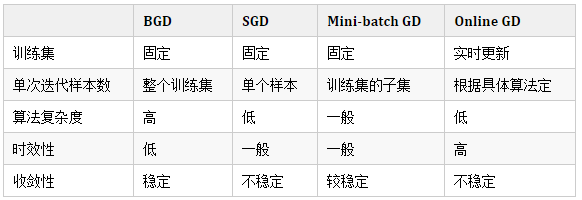

机器学习理论
数学知识
机器学习中的距离和相似度度量方式有哪些？
- 欧氏距离
- 曼哈顿距离
- 切比雪夫距离
- 闵可夫斯基距离
- 标准化欧氏距离
- 马氏距离
- 夹角余弦
- 汉明距离
这里无法给出具体的公式，定义是两个等长字符串s1与s2之间的汉明距离定义为将其中一个变为另外一个所需要作的最小替换次数。例如字符串“1111”与“1001”之间的汉明距离为2 - 杰卡德距离 & 杰卡德相似系数
- 相关系数 & 相关距离
马氏距离比欧式距离的异同点？
马氏距离（Mahalanobis Distance）是由印度统计学家马哈拉诺比斯（P. C. Mahalanobis）提出的，表示数据的协方差距离。它是一种有效的计算两个未知样本集的相似度的方法。与欧氏距离不同的是它考虑到各种特性之间的联系（例如：一条关于身高的信息会带来一条关于体重的信息，因为两者是有关联的）并且是尺度无关的（scale-invariant），即独立于测量尺度。
马氏距离有很多优点，马氏距离不受量纲的影响，两点之间的马氏距离与原始数据的测量单位无关；由标准化数据和中心化数据(即原始数据与均值之差）计算出的二点之间的马氏距离相同。马氏距离还可以排除变量之间的相关性的干扰。它的缺点是夸大了变化微小的变量的作用。
张量与矩阵的区别？
- 从代数角度讲， 矩阵它是向量的推广。向量可以看成一维的“表格”（即分量按照顺序排成一排）， 矩阵是二维的“表格”（分量按照纵横位置排列）， 那么阶张量就是所谓的维的“表格”。张量的严格定义是利用线性映射来描述。
- 从几何角度讲， 矩阵是一个真正的几何量，也就是说，它是一个不随参照系的坐标变换而变化的东西。向量也具有这种特性。
如何判断矩阵为正定？
判定一个矩阵是否为正定，通常有以下几个方面：
- 顺序主子式全大于0；
- 存在可逆矩阵$C$使得$C^TC$等于该矩阵；
- 正惯性指数等于n；
- 合同于单位矩阵$E$（即：规范形为$E$）
- 标准形中主对角元素全为正；
- 特征值全为正；
- 是某基的度量矩阵。
距离的严格定义？
距离的定义：在一个集合中，如果每一对元素均可唯一确定一个实数，使得三条距离公理（正定性，对称性，三角不等式）成立，则该实数可称为这对元素之间的距离。
在机器学习领域，被俗称为距离，却不满足三条距离公理的不仅仅有余弦距离，还有 KL 距离，也叫作相对熵，它常用于计算两个分布之间的差异，但不满足对称性和三角不等式。
来自
参考
https://zhuanlan.zhihu.com/p/85408804
https://www.zhihu.com/question/27057384/answer/2182368961
概率论
什么是概率？
“概率，亦称“或然率”，它是反映随机事件出现的可能性大小。
概率和频率的区别？
概率是一个稳定的数值，也就是某件事发生或不发生的概率是多少。频率是在一定数量的某件事情上面，发生的数与总数的比值。频率是有限次数的试验所得的结果，概率是频数无限大时对应的频率。
泊松分布与二项分布的关系？
泊松分布可看成是二项分布的极限而得到，当$\lambda = np$时，两者是相同的。
常见分布的期望和方差是什么？

什么是大数定理？
大数定理简单来说，指得是某个随机事件在单次试验中可能发生也可能不发生，但在大量重复实验中往往呈现出明显的规律性，即该随机事件发生的频率会向某个常数值收敛，该常数值即为该事件发生的概率。
另一种表达方式为当样本数据无限大时，样本均值趋于总体均值。
因为现实生活中，我们无法进行无穷多次试验，也很难估计出总体的参数。
大数定律告诉我们能用频率近似代替概率；能用样本均值近似代替总体均值。
什么是中心极限定理？
中心极限定理是概率论中的一组重要定理，它的中心思想是无论是什么分布的数据，当我们从中抽取相互独立的随机样本，且采集的样本足够多时，样本均值的分布将收敛于正态分布。
求最大似然估计量的一般步骤？
- 写出似然函数
- 对似然函数取对数，并整理
- 求导数
- 解似然方程
什么是无偏性？
无偏性（Unbiasedness）是指单凭某一次抽样的样本是不具有说服力的，必须要通过很多次抽样的样本来衡量。因此，我们容易能想到的就是，经过多次抽样后，将所有的点估计值平均起来，也就是取期望值，这个期望值应该和总体参数一样。这就是所谓的无偏性（Unbiasedness）。
说一下条件概率、全概率和贝叶斯公式？
- 条件概率/分布律（乘法公式）
P(A|B)=P(AB)/P(B)，演化式P(A|B)P(B)=P(B|A)P(A)
- 全概率公式
P(A)= P(A|B1)+P(A|B2)+P(A|B3)+…+P(A|Bn)，其中A为样本空间的事件，B1、B2、B3…Bn为样本空间的一个划分。
- 贝叶斯公式
P(Bi|A)= P(A|Bi)*P(Bi)/[P(A|B1)+P(A|B2)+P(A|B3)+…+P(A|Bn)]，其中A为样本空间的事件，B1、B2、B3…Bn为样本空间的一个划分。
一句话解释极大似然估计法和概率的区别?
概率是已知分布和参数，求事件结果出现的次数；极大似然估计是已知分布和事件结果出现的次数，估计事件结果以最大概率的出现情况下的参数。
极大似然估计，最大后验估计的区别？
当先验概率是分布均匀的情况下，则相当于没有给参数提供任何有用的信息，例如每种情况都是等概率的事件，那此时的极大似然估计就等于最大后验估计。
因此，可以把极大似然估计看成一种特殊的先验概率为均匀分布的最大后验估计，
也可以把最大后验估计估计看成是必须考虑先验概率的极大似然估计（即最大后验估计是规则化的)极大似然估计）
协方差为0，一定独立吗？
因为协方差等于零只能推出不相关的，所以不能推出互相独立的。但互相独立的可以推出互不相干的。比如X=cosa, Y=sina, 则X和Y的协方差为0, 但是X,Y两者不独立.
协方差的算法：COV(X,Y)=E{(X-E(X))(Y=E(Y))}E为数学期望；它反映随机变量平均取值的大小。又称期望或均值。它是简单算术平均的一种推广。
参考
https://zhuanlan.zhihu.com/p/87299555
https://zhuanlan.zhihu.com/p/427883809
https://blog.csdn.net/qq_41897154/article/details/109125820
https://blog.csdn.net/m0_37382341/article/details/80049976
https://zhuanlan.zhihu.com/p/159115973
学习理论
什么是表示学习？
在深度学习领域内，表示是指通过模型的参数，采用何种形式、何种方式来表示模型的输入观测样本X。表示学习指学习对观测样本X有效的表示。
什么是端到端学习？
端到端学习（End-to-End Learning），也称端到端训练，是指在学习过程中不进行分模块或分阶段训练，直接优化任务的总体目标．在端到端学习中，一般不需要明确地给出不同模块或阶段的功能，中间过程不需要人为干预
机器学习的学习方式主要有哪些?
监督学习
非监督式学习
半监督式学习
弱监督学习
如何开展监督学习?
步骤1：数据集的创建和分类 。
步骤2：数据增强（Data Augmentation）
步骤3：特征工程（Feature Engineering）
步骤4：构建预测模型和损失
步骤5：训练
步骤6：验证和模型选择
步骤7：测试及应用
类别不均衡问题怎么做?
防止类别不平衡对学习造成的影响，在构建分类模型之前，需要对分类不平衡性问题进行处理。主要解决方法有：
1、扩大数据集
增加包含小类样本数据的数据，更多的数据能得到更多的分布信息。
2、对大类数据欠采样
减少大类数据样本个数，使与小样本个数接近。 缺点：欠采样操作时若随机丢弃大类样本，可能会丢失重要信息。 代表算法：EasyEnsemble。其思想是利用集成学习机制，将大类划分为若干个集合供不同的学习器使用。相当于对每个学习器都进行欠采样，但对于全局则不会丢失重要信息。
3、对小类数据过采样
过采样：对小类的数据样本进行采样来增加小类的数据样本个数。
代表算法：SMOTE和ADASYN。
SMOTE：通过对训练集中的小类数据进行插值来产生额外的小类样本数据。
新的少数类样本产生的策略：对每个少数类样本a，在a的最近邻中随机选一个样本b，然后在a、b之间的连线上随机选一点作为新合成的少数类样本。 ADASYN：根据学习难度的不同，对不同的少数类别的样本使用加权分布，对于难以学习的少数类的样本，产生更多的综合数据。通过减少类不平衡引入的偏差和将分类决策边界自适应地转移到困难的样本两种手段，改善了数据分布。
4、使用新评价指标
如果当前评价指标不适用，则应寻找其他具有说服力的评价指标。比如准确度这个评价指标在类别不均衡的分类任务中并不适用，甚至进行误导。因此在类别不均衡分类任务中，需要使用更有说服力的评价指标来对分类器进行评价。
5、选择新算法
不同的算法适用于不同的任务与数据，应该使用不同的算法进行比较。
6、数据代价加权
例如当分类任务是识别小类，那么可以对分类器的小类样本数据增加权值，降低大类样本的权值，从而使得分类器将重点集中在小类样本身上。
7、转化问题思考角度
例如在分类问题时，把小类的样本作为异常点，将问题转化为异常点检测或变化趋势检测问题。异常点检测即是对那些罕见事件进行识别。变化趋势检测区别于异常点检测在于其通过检测不寻常的变化趋势来识别。
8、将问题细化分析
对问题进行分析与挖掘，将问题划分成多个更小的问题，看这些小问题是否更容易解决。
维度灾难是啥？怎么避免？
维数灾难(Curse of Dimensionality)：通常是指在涉及到向量的计算的问题中，随着维数的增加，计算量呈指数倍增长的一种现象。维数灾难涉及数字分析、抽样、组合、机器学习、数据挖掘和数据库等诸多领域。在机器学习的建模过程中，通常指的是随着特征数量的增多，计算量会变得很大，如特征得到上亿维的话，在进行计算的时候是算不出来的。如我们熟悉的KNN的问题，如果不是 构建Kd数等可以加快计算，按照暴力的话，计算量是很大的。而且有的时候，维度太大也会导致机器学习性能的下降，并不是特征维度越大越好，模型的性能会随着特征的增加先上升后下降。
解决维度灾难问题：
- 主成分分析法PCA，线性判别法LDA
- 奇异值分解简化数据、拉普拉斯特征映射
- Lassio缩减系数法、小波分析法
生成模型和判别模型的区别?
判别模型：由数据直接学习决策函数Y=f(X)或者条件概率分布P(Y|X)作为预测的模型，即判别模型。基本思想是有限样本条件下建立判别函数，不考虑样本的产生模型，直接研究预测模型。典型的判别模型包括k近邻，感知级，决策树，支持向量机等。
生成模型：由数据学习联合概率密度分布P(X,Y)，然后求出条件概率分布P(Y|X)作为预测的模型，即生成模型：P(Y|X)= P(X,Y)/ P(X)。基本思想是首先建立样本的联合概率概率密度模型P(X,Y)，然后再得到后验概率P(Y|X)，再利用它进行分类。常见的有NB HMM模型。
优化理论
什么是凸优化？
凸优化问题（OPT，convex optimization problem）指定义在凸集中的凸函数最优化的问题。尽管凸优化的条件比较苛刻，但仍然在机器学习领域有十分广泛的应用。
凸优化的优势是什么？
- 凸优化问题的局部最优解就是全局最优解
- 很多非凸问题都可以被等价转化为凸优化问题或者被近似为凸优化问题（例如拉格朗日对偶问题）
- 凸优化问题的研究较为成熟，当一个具体被归为一个凸优化问题，基本可以确定该问题是可被求解的
如何判断函数是否为凸的?
熟悉凸函数的定义，即在凸的定义域上取两个点$x,y$ ，其凸组合的值应该小于等于其值的凸组合，对任意$\lambda \in [0,1]$,有的话$f(\lambda x + (1 - \lambda )y) \le \lambda f(x) + (1 - \lambda )f(y)$,那么它就是凸函数。
什么是鞍点？
鞍点（Saddle point）在微分方程中，沿着某一方向是稳定的，另一条方向是不稳定的奇点，叫做鞍点。在泛函中，既不是极大值点也不是极小值点的临界点，叫做鞍点。在矩阵中，一个数在所在行中是最大值，在所在列中是最小值，则被称为鞍点。在物理上要广泛一些，指在一个方向是极大值，另一个方向是极小值的点。从海塞矩阵的角度来说，Hessian矩阵不定的点称为鞍点，它不是函数的极值点。

解释什么是局部极小值，什么是全局极小值？
局部极值点：假设是一个$X^$可行解，如果对可行域内所有点$X$都有$f({x^}) \le f(x)$，则称为全局极小值。
全局极值点。对于可行解$X^$，如果存在其邻域$\delta$，使得该邻域内的所有点即所有满足$||x - x|| \le \delta$的点$x$，都有$f({x^*}) \le f(x)$，则称为局部极小值。
既然有全局最优，为什么还需要有局部最优呢？
对于优化问题，尤其是最优化问题，总是希望能找到全局最优的解决策略，但是当问题的复杂度过于⾼，要考虑的因素和处理的信息量过多的时候，我们往往会倾向于接受局部最优解，因为局部最优解的质量不⼀定最差的。尤其是当我们有确定的评判标准标明得出的解释可以接受的话，通常会接受局部最优的结果。这样，从成本、效率等多⽅⾯考虑，才是实际⼯程中会才去的策略。
机器学习有哪些优化方法？
机器学习和深度学习中常用的算法包含不局限如下：梯度下降、牛顿法和拟牛顿、动量法momentum、Adagrad、RMSProp、Adadelta、Adam等，无梯度优化算法也有很多，像粒子群优化算法、蚁群算法、遗传算法、模拟退火等群体智能优化算法。
几个常见的优化方法的比较如下：
梯度下降法和牛顿法能保证找到函数的极小值点吗，为什么？
不能，可能收敛到鞍点，不是极值点。
解释一元函数极值判别法则是什么？
假设为函数的驻点，可分为以下三种情况。
情况一：在该点处的二阶导数大于0，则为函数的极小值点；
情况二：在该点处的二阶导数小于0，则为极大值点；
情况三：在该点处的二阶导数等于0，则情况不定，可能是极值点，也可能不是极值点。
解释多元函数极值判别法则是什么？
假设多元函数在点M的梯度为0，即M是函数的驻点。其Hessian矩阵有如下几种情况。
情况一：Hessian矩阵正定，函数在该点有极小值。
情况二：Hessian矩阵负定，函数在该点有极大值。
情况三：Hessian矩阵不定，则不是极值点，称为鞍点。
Hessian矩阵正定类似于一元函数的二阶导数大于0，负定则类似于一元函数的二阶导数小于0。
什么是对偶问题？
可以将对偶问题看成是关于原问题松弛问题的优化问题，对偶问题的目标，是以一定方式，找到最贴近原问题的松弛问题。如果将原问题以对偶变量为参数进行松弛，将得到一系列以对偶变量为参数的松弛问题（例如拉格朗日松弛问题，是以拉格朗日乘子为参数，将原问题约束松弛到目标函数后得到的松弛问题）对偶问题则是通过优化对偶变量，找到最逼近原问题的松弛问题（例如拉格朗日对偶问题，是优化拉格朗日乘子，得到最接近原问题的松弛问题，即原问题的下界）
随机梯度下降法、批量梯度下降法有哪些区别？
批量梯度下降：
(1) 采用所有数据来梯度下降。
(2) 批量梯度下降法在样本量很大的时候，训练速度慢。
随机梯度下降
(1) 随机梯度下降用一个样本来梯度下降。
(2) 训练速度很快。
(3) 随机梯度下降法仅仅用一个样本决定梯度方向，导致解有可能不是全局最优。
(4) 收敛速度来说，随机梯度下降法一次迭代一个样本，导致迭代方向变化很大，不能很快的收敛到局部最优解。
各种梯度下降法性能对比？

说一下梯度下降法缺点?
- 靠近极小值时收敛速度减慢
在极小值点附近的话，梯度比较小了，毕竟那个点的梯度都快为零了，收敛的就慢了 - 直线搜索时可能会产生一些问题
步子大或者小会导致来回的震荡，导致不太好收敛 - 可能会“之字形”地下降
如下所示，梯度下降会来回走之字，导致优化速度慢
如何对梯度下降法进行调优?
算法迭代步长选择
在算法参数初始化时，有时根据经验将步长初始化为1。实际取值取决于数据样本。可以从大到小，多取一些值，分别运行算法看迭代效果，如果损失函数在变小，则取值有效。如果取值无效，说明要增大步长。但步长太大，有时会导致迭代速度过快，错过最优解。步长太小，迭代速度慢，算法运行时间长。参数的初始值选择
初始值不同，获得的最小值也有可能不同，梯度下降有可能得到的是局部最小值。如果损失函数是凸函数，则一定是最优解。由于有局部最优解的风险，需要多次用不同初始值运行算法，关键损失函数的最小值，选择损失函数最小化的初值。标准化处理
由于样本不同，特征取值范围也不同，导致迭代速度慢。为了减少特征取值的影响，可对特征数据标准化，使新期望为0，新方差为1，可节省算法运行时间。
随机梯度下降法、批量梯度下降法有哪些区别？
批量梯度下降：
(1) 采用所有数据来梯度下降。
(2) 批量梯度下降法在样本量很大的时候，训练速度慢。
随机梯度下降
(1) 随机梯度下降用一个样本来梯度下降。
(2) 训练速度很快。
(3) 随机梯度下降法仅仅用一个样本决定梯度方向，导致解有可能不是全局最优。
(4) 收敛速度来说，随机梯度下降法一次迭代一个样本，导致迭代方向变化很大，不能很快的收敛到局部最优解。
梯度下降法缺点
梯度下降法是最早最简单，也是最为常用的最优化方法。梯度下降法实现简单，当目标函数是凸函数时，梯度下降法的解是全局解。
一般情况下，其解不保证是全局最优解，梯度下降法的速度也未必是最快的。梯度下降法的优化思想是用当前位置负梯度方向作为搜索方向，因为该方向为当前位置的最快下降方向，所以也被称为是”最速下降法“。最速下降法越接近目标值，步长越小，前进越慢。
梯度下降法缺点有以下几点：
（1）靠近极小值时收敛速度减慢。
在极小值点附近的话，梯度比较小了，毕竟那个点的梯度都快为零了，收敛的就慢了
（2）直线搜索时可能会产生一些问题。
步子大或者小会导致来回的震荡，导致不太好收敛
（3）可能会“之字形”地下降。
如下所示，梯度下降会来回走之字，导致优化速度慢
https://blog.csdn.net/qq_40722827/article/details/107297535、
批量梯度下降和随机梯度下降法的缺点？
批量梯度下降
a）采用所有数据来梯度下降。
b）批量梯度下降法在样本量很大的时候，训练速度慢。
随机梯度下降
a）随机梯度下降用一个样本来梯度下降。
b）训练速度很快。
c）随机梯度下降法仅仅用一个样本决定梯度方向，导致解有可能不是全局最优。
d）收敛速度来说，随机梯度下降法一次迭代一个样本，导致迭代方向变化很大，不能很快的收敛到局部最优解。
如何对梯度下降法进行调优?
实际使用梯度下降法时，各项参数指标不能一步就达到理想状态，对梯度下降法调优主要体现在以下几个方面：
（1）算法迭代步长$\alpha$选择。 在算法参数初始化时，有时根据经验将步长初始化为1。实际取值取决于数据样本。可以从大到小，多取一些值，分别运行算法看迭代效果，如果损失函数在变小，则取值有效。如果取值无效，说明要增大步长。但步长太大，有时会导致迭代速度过快，错过最优解。步长太小，迭代速度慢，算法运行时间长。
（2）参数的初始值选择。 初始值不同，获得的最小值也有可能不同，梯度下降有可能得到的是局部最小值。如果损失函数是凸函数，则一定是最优解。由于有局部最优解的风险，需要多次用不同初始值运行算法，关键损失函数的最小值，选择损失函数最小化的初值。
（3）标准化处理。 由于样本不同，特征取值范围也不同，导致迭代速度慢。为了减少特征取值的影响，可对特征数据标准化，使新期望为0，新方差为1，可节省算法运行时间。
各种梯度下降法性能比较
对比维度-BGD-SGD-Mini-batch GD-Online GD
训练集-固定-固定-固定-实时更新
单次迭代样本数-整个训练集-单个样本-训练集的子集-根据具体算法定
算法复杂度-高-低-一般-低
时效性-低-一般-一般-高
收敛性-稳定-不稳定-较稳定-不稳定
为什么归一化能加快梯度下降法求优化速度？
归一化后的数据有助于在求解是缓解求解过程中的参数寻优的动荡，以加快收敛。对于不归一化的收敛，可以发现其参数更新、收敛如左图，归一化后的收敛如右图。可以看到在左边是呈现出之字形的寻优路线，在右边则是呈现较快的梯度下降。
标准化和归一化有什么区别？
归一化是将样本的特征值转换到同一量纲下把数据映射到[0,1]或者[-1, 1]区间内，仅由变量的极值决定，因区间放缩法是归一化的一种。
$$
x' = \frac{{x - \min (x)}}{{\max (x) - \min (x)}}
$$
标准化是依照特征矩阵的列处理数据，其通过求z-score的方法，转换为标准正态分布，和整体样本分布相关，每个样本点都能对标准化产生影响。它们的相同点在于都能取消由于量纲不同引起的误差；都是一种线性变换，都是对向量X按照比例压缩再进行平移。
$$
x' = \frac{{x - \bar x}}{\sigma }
$$
批量梯度下降和随机梯度下降法的缺点
批量梯度下降
a）采用所有数据来梯度下降。
b）批量梯度下降法在样本量很大的时候，训练速度慢。
随机梯度下降
a）随机梯度下降用一个样本来梯度下降。
b）训练速度很快。
c）随机梯度下降法仅仅用一个样本决定梯度方向，导致解有可能不是全局最优。
d）收敛速度来说，随机梯度下降法一次迭代一个样本，导致迭代方向变化很大，不能很快的收敛到局部最优解。
极大似然估计和最小二乘法区别？
对于最小二乘法，当从模型总体随机抽取n组样本观测值后，最合理的参数估计量应该使得模型能最好地拟合样本数据，也就是估计值和观测值之差的平方和最小。
而对于最大似然法，当从模型总体随机抽取n组样本观测值后，最合理的参数估计量应该使得从模型中抽取该n组样本观测值的概率最大。
在最大似然法中，通过选择参数，使已知数据在某种意义下最有可能出现，而某种意义通常指似然函数最大，而似然函数又往往指数据的概率分布函数。与最小二乘法不同的是，最大似然法需要已知这个概率分布函数，这在实践中是很困难的。一般假设其满足正态分布函数的特性，在这种情况下，最大似然估计和最小二乘估计相同。
最小二乘法以估计值与观测值的差的平方和作为损失函数，极大似然法则是以最大化目标值的似然概率函数为目标函数，从概率统计的角度处理线性回归并在似然概率函数为高斯函数的假设下同最小二乘建立了的联系。
信息论
什么是信息增益？
定义：以某特征划分数据集前后的熵的差值。 熵可以表示样本集合的不确定性，熵越大，样本的不确定性就越大。因此可以使用划分前后集合熵的差值来衡量使用当前特征对于样本集合D划分效果的好坏。 假设划分前样本集合D的熵为H(D)。使用某个特征A划分数据集D，计算划分后的数据子集的熵为H(D|A)。
则信息增益为：g(D,A)=H(D)-H(D|A)
熵是什么？
熵 Entropy 也叫信息熵（Information Entropy）或香农熵（Shannon Entropy）,是度量 信息的随机度和不确定度。实验中的不确定性使用熵来测量，因此，如果实验中存在固有的不确定性越多，那么它的熵就会越高。
交叉熵表示的意义是什么？
交叉熵（Cross-Entropy）用来比较两个概率分布的。它会告诉我们两个分布的相似程度。 在同一组结果上定义的两个概率分布p和q之间的交叉熵，也就是$H(p,q) = \sum {p\log q}$.
KL散度是什么？
KL 散度通常用来度量两个分布之间的差异。KL 散度全称叫kullback leibler 散度，也叫做相对熵（relative entropy）。在机器学习中常用到，譬如近似推断中，有变分推断和期望传播，都是通过 Minimize KL散度来实现推断实现逼近目标分布。
$$
{D_{kl}}(A||B) = \sum\limits_i {{p_A}({v_i})\log \frac{{{p_A}({v_i})}}{{{p_B}({v_i})}}}
$$
KL散度有哪些问题，该如何解决？
我们从上面的公式可以看到，KL上散度是非对称的，因此在算两个分布相似性的时候，分布计算的顺序会影响到计算的结果，因此有的时候会导致无法解释。为了解决这个这个问题，可以使用JS散度，计算结果如下：
$$
{D_{js}}(A||B) = \frac{1}{2}({D_{kl}}(A||B) + {D_{kl}}(B||A))
$$
KL散度和交叉熵的区别？
从交叉熵的定义来看，得到KL散度的计算方法如下：
$$
H(A,B) = {D_{kl}}(A||B) + S(A)
$$
可以看到两者相差一个常数，优化的时候可以看到两者是一样的。
什么是最大熵模型以及它的基本原理？
MaxEnt （最大熵模型）是概率模型学习中一个准则，其思想为：在学习概率模型时，所有可能的模型中熵最大的模型是最好的模型；若概率模型需要满足一些约束，则最大熵原理就是在满足已知约束的条件集合中选择熵最大模型。最大熵原理指出，对一个随机事件的概率分布进行预测时，预测应当满足全部已知的约束，而对未知的情况不要做任何主观假设。在这种情况下，概率分布最均匀，预测的风险最小，因此得到的概率分布的熵是最大
最大熵与逻辑回归的区别？
逻辑回归是最大熵对应类别为两类时的特殊情况，也就是当逻辑回归类别扩展到多类别时，就是最大熵。
其联系在于：最大熵与逻辑回归均属于对数线性模型。它们的学习一般采用极大似然估计，或正则化的极大似然估计，可以形式化为无约束最优化问题。求解该优化问题的算法有改进的迭代尺度法、梯度下降法、拟牛顿法。
指数簇分布的最大熵等价于其指数形式的最大似然界；二项式的最大熵解等价于二项式指数形式(sigmoid)的最大似然，多项式分布的最大熵等价于多项式分布指数形式(softmax)的最大似然。
最大熵优缺点？
最大熵模型的优点有：
- 最大熵统计模型获得的是所有满足约束条件的模型中信息熵极大的模型,作为经典的分类模型时准确率较高。
- 可以灵活地设置约束条件，通过约束条件的多少可以调节模型对未知数据的适应度和对已知数据的拟合程度。
最大熵模型的缺点有：
- 由于约束函数数量和样本数目有关系，导致迭代过程计算量巨大，实际应用比较难。
参考
https://blog.csdn.net/SecondLieutenant/article/details/79042717
https://www.cnblogs.com/hellojamest/p/10862264.html
https://zhuanlan.zhihu.com/p/292434104
其他
分类问题标签长尾分布该怎么办？
1.最常用的技巧，up-sampling 或 down-sampling, 其实在 long tail 的 data 做这两种 sampling 都不是特别好的办法. 由于 tail label 数据非常 scarce, 如果对 head label 做 down-sampling 会丢失绝大部分信息. 同理, 对 tail label 做 up-sampling, 则引入大量冗余数据. 这里有篇文章对比了这两种采样方法。 可以参考文献1
2.divide-and-conquer, 即将 head label 和 tail label 分别建模. 比如先利用 data-rich 的 head label 训练 deep model, 然后将学到的样本的 representation 迁移到 tail label model, 利用少量 tail label data 做 fine-tune. 具体做法可以参考文献2
3.对 label 加权, 每个 label 赋予不同的 cost. 如给予 head label 较低的 weight, 而 tail label 则给予较高的 weight, 但是这个权重是怎么设置还需要参考相关文献。
当机器学习性能不是很好时，你会如何优化？
- 基于数据来改善性能
- 基于算法
- 算法调参
- 模型融合
包含百万、上亿特征的数据在深度学习中怎么处理？
这么多的特征，肯定不能直接拿去训练，特征多，数据少，很容易导致模型过拟合。
（1）特征降维：PCA或LDA
（2）使用正则化，L1或L2
引入 L_1 范数除了降低过拟合风险之外，还有一个好处：它求得的 w 会有较多的分量为零。即：它更容易获得稀疏解。
（3）样本扩充：数据增强
（4）特征选择：去掉不重要的特征
类别型数据你是如何处理的？比如游戏品类，地域，设备？
序号编码、one-hot编码、多热编码，二进制编码，搞成嵌入向量
参考
https://blog.csdn.net/weixin_46838716/article/details/124424903
learning-to-model-the-tail
deepxml: scalable & accurate deep extreme classification for matching user ueries to advertiser bid phrases
extreme multi-label learning with label features for warm-start tagging, ranking & recommendation